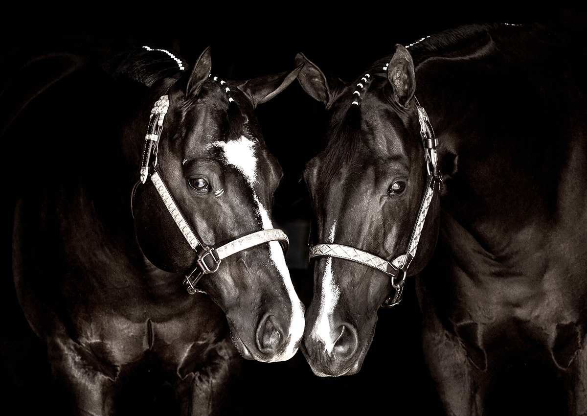

The Artist
Sarah L. Glabman
Landscape & wildlife photographer — drawn to the quiet pull of light, weather, and untamed places.
Landscape & wildlife photographer — drawn to the quiet pull of light, weather, and untamed places.
I came to photography the way most people come to a long love — slowly, and without quite knowing it. I grew up watching desert light fall across the Sonoran, and somewhere between morning hikes and evening drives I realized the camera was simply a way to keep moments that otherwise would have passed.
The work in this collection is made over years, not minutes. From the slot canyons of northern Arizona to the savannas of Botswana, the kelp-rimmed coast of California to the wave-cut cliffs of Kauai, every image begins with patience: scouting the terrain, learning the weather, returning until the light gives something back.
Every print is signed by hand and made to last — archival fine art paper or museum-grade canvas, ready to hang in a home that pays attention.

Each photograph is captured in the field on professional equipment, then carefully refined in the studio with a light touch — preserving the truth of the moment, not invented from it.
Prints are produced on archival cotton-rag paper or gallery-wrapped canvas, color-tested for longevity, then signed and packaged by hand from the studio in Scottsdale, Arizona.